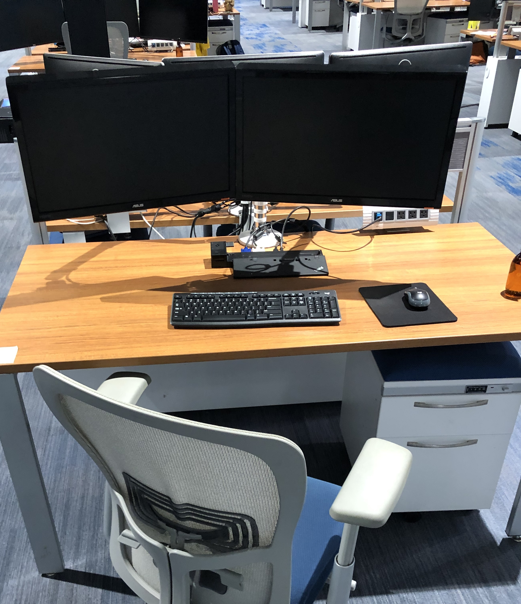
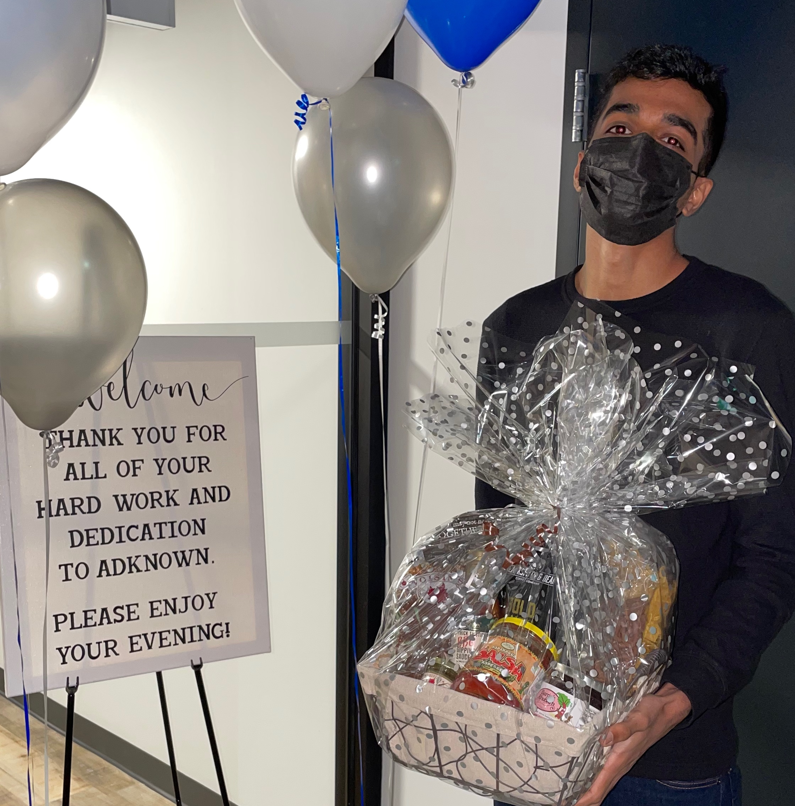
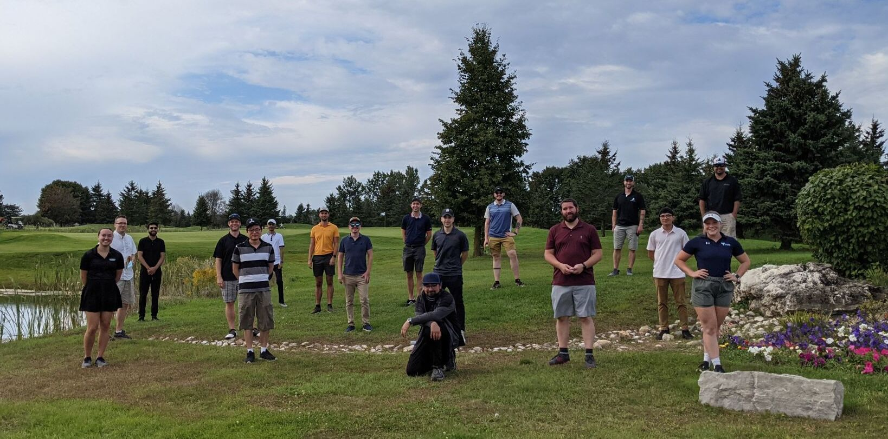

Adknown Work Term Report
Fall 2021 (September 2021 - December 2021)
Introduction
Welcome! This post is the first of several that will detail my work experiences throughout my coop program at the University of Guelph. For my first work term, I had the wonderful opportunity to work as a Software Engineer Intern at Adknown from September 2021 to December 2021.
About Adknown
Adknown is a leading digital media company specializing in advertising, marketing, and web/app publishing. For my work term at Adknown, I had the pleasure of working in their newly renovated office in Downtown Guelph, Ontario.

 Due to government measures and restrictions for COVID-19, we had a hybrid schedule of working from home and in the office, although there were still many fun events and socials hosted.
Due to government measures and restrictions for COVID-19, we had a hybrid schedule of working from home and in the office, although there were still many fun events and socials hosted.
What did I do?
I worked as a Software Engineer Intern in one of two development teams at Adknown, focusing on maintaining internal software and tools used by the SEM (Search Engine Marketing) team - primarily working within the internal ad campaign management system called Sapphire.
On my first day, I did not get much time to get used to the system, as right after orientation and setup, I dived into my first ticket, which was a simple bug fix. This gave me my first look into the agile development workflow at Adknown and using platforms such as Jira and Bitbucket.
Soon after this, I started a relatively large ticket, adding support for sitelinks to the ad campaign management tool - this took me about two weeks but was helpful as a stepping stone in using React, which is what I primarily used for the other tools I worked on.
I enjoyed working with React since it was so modular and easy to replicate, which is evident by how the pace of my work improved from the start of my work term to the end.
A few weeks in, I also joined the weekly sprint, which meant that tickets were much tighter regarding time, but this forced me to adapt, and my workflow improved in efficiency and quality because of it. I also moved on to using the Material UI library for most React tools I worked with. A lot of the tickets assigned to me were upgrading older tools that used jQuery or React to Material UI for a more modern and consistent look and a code library that is easier to manage and maintain.
My role was not limited to only frontend aspects, however; when working on new tools, I had to work on the backend as well, such as creating APIs in PHP and querying databases using MySQL. Prior to this job, I had minimal experience working with full-stack development, but I became very confident creating a new tool from scratch towards the end of my work term.
Another part of my role was documenting the tools that I created or updated for both non-technical users and developers. For non-technical users, I attempted to be as explicit as possible when describing the steps to perform a specific action, which was a bit strange having to retrace development steps after finishing a ticket. While working on tools, I also tried to comment any complex sections of code that I had written so that any developer who has to reference or update anything in the future might have an easier time finding sections of code. The documentation was not something that I particularly enjoyed doing; however, it is an essential aspect of being a developer. It was good to get out of my comfort zone and build a habit for something that will undoubtedly come in useful in any future role.
Towards the end of my work term, I started to branch out and work with other systems, such as logging tools for the game development team or more generic tools used for general software management. I also got to experience some smaller tasks that the other developers would usually work on, which gave me a better understanding of the role and the interconnectedness between teams.
Goals
My first goal was to gain more experience and become more confident with full-stack development. I can definitely say that I have achieved this goal since the process feels more natural. In contrast, at the beginning of the term, I did not fully understand the order in which to complete things, or I might have missed a step, like making an API call but not implementing a function for it (rookie mistake). My efficiency also improved throughout the work term. As I previously mentioned, it was partly because of joining the sprint and having a stricter schedule for tasks, but also because of consistently working with the same technologies, so it's almost like every ticket was practice to become better. Working with JavaScript and React, in particular, will be very useful in future positions because it is modern and applies to almost any setup.
My second goal was to self-learn more efficiently, easily identify problems, and quickly find or think of a solution. I would say that I have improved on self-learning; whenever I encountered a new error, I could find a solution, and if not, I would attempt to solve it myself before asking for help. Reflecting on the goal, solving problems 'quickly' is not always an option, especially if it is an entirely new error that you are oblivious to. It also is challenging never to make a mistake, even if that is ideal, and slip-ups like syntax errors are entirely possible. However, the likelihood of me making the same small naive mistakes has certainly decreased. Using JavaScript has helped me avoid such mistakes - coding with ESLint introduced me to some niche programming tips (e.g., array/object destructuring) and improved my overall coding style and etiquette.
My last goal was directly correlated to being in a development role to see if I would enjoy working in similar roles in the future. My aim was to become more accustomed to the software development workflow, which has become second nature for me: from getting a task, then working on the ticket, to finally submitting it for review. I now know what I have to do, or if there is insufficient information on the ticket and if I have to ask for more. Joining the sprint allowed me some insight into dependencies between teams/projects, i.e., people may need you to finish something before they can start something else. Additionally, my time management skills have improved because of it - such as managing time effectively and approximating how much time a task will take.
Conclusions
Working for Adknown for my first coop work term was an incredibly valuable experience. I thoroughly enjoyed the workplace culture as well as all the amazing people, including the weekly lunches, the Fun Friday socials and the dinners, where it was nothing but good energy all round!
I've learned so much from this experience and I'm thankful that my first coop work term was Adknown. Working here really allowed me to see what I was capable of and makes me want to pursue more development positions.

Acknowledgements
I would like to thank everyone in the SEM dev team for being an absolute pleasure to work with, and helping to start the day off well with the daily scrum. I would like to thank Alex in particular for being such a supportive mentor and putting up with my barrage of questions. You've made this experience so informative and useful, I've definitely learned a lot from both our review sessions as well as seeing how you work and approach problems.
A huge thank you to everyone at Adknown for making me feel so welcome and truly making my experience amazing!
